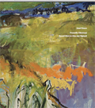
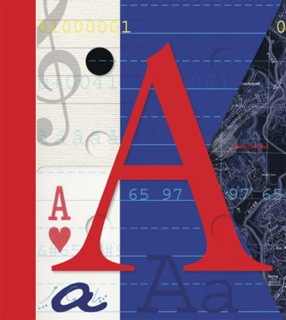
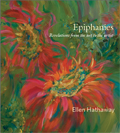
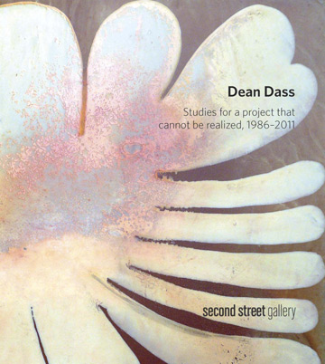
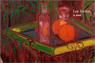

|
> Publications
Catalogues

Janet Bruce
Presently Observed
Recent Work in Wax and Pigment
Essay by Sarah Sargent
22 pages, 17 illustrations
$15
email us >
Published on the occasion of the exhibition
Janet Bruce: Presently Observed: Recent Work in Wax and Oil Pigments
Les Yeux du Monde Gallery
Charlottesville, Virginia
11 October – 17 November 2013

Anne Chesnut
art.i.facts
Introduction by Andrea Douglas
Interview by Lyn Bolen Warren
ISBN 978-0-9890107-0-2
40 pages, 60 illustrations
$15
email us >
Published on the occasion of the exhibition
Anne Chesnut: Art.i.facts
Les Yeux du Monde Gallery
Charlottesville, Virginia
28 February – 7 April 2013

Ellen Hathaway
Epiphanies
Revelations from art to the artist
18 pages, 17 illustrations
$15
email us >
Published on the occasion of the exhibition
Ellen Hathaway: Epiphanies
Les Yeux du Monde Gallery
Charlottesville, Virginia
5 January – 12 February 2012

Dean Dass
Studies for a project that cannot be realized, 1986–2011
Essay by Rebecca Schoenthal
Interview by Lyn Bolen Warren
ISBN 978-0-9773828-9-7
40 pages, 37 illustrations
$15
email us >
Published on the occasion of the exhibitions
Dean Dass: Studies for a project that cannot be realized, 1986–2011
Organized by 2nd Street Gallery
Charlottesville, Virginia
4 November – 23 December 2011
Dean Dass
Heaven and earth: New paintings and drawings
Les Yeux du Monde Gallery
Charlottesville, Virginia
18 November – 31 December 2011

Lou Jordan
In Mind
18 pages, 20 illustrations
$15
email us >
|

{kind=link}
{kind=link}
{kind=link}
{kind=link}
{kind=link}